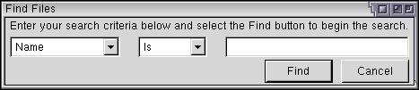
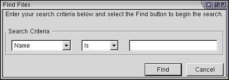

Adding More Elements
We'll conclude the discussion of boxes by adding some boxes to the find files dialog.
Adding some Additional Elements
We'll add some more elements to the find files dialog now. First, we'll add the capability to search for other information such as the file size and date.
<hbox>
<menulist id="searchtype">
<menupopup>
<menuitem label="Name"/>
<menuitem label="Size"/>
<menuitem label="Date Modified"/>
</menupopup>
</menulist>
<spacer style="width: 10px;"/>
<menulist id="searchmode">
<menupopup>
<menuitem label="Is"/>
<menuitem label="Is Not"/>
</menupopup>
</menulist>
<spacer style="width: 10px;"/>
<textbox id="find-text" flex="1" style="min-width: 15em;"/>
</hbox>Two drop down boxes have been added to the dialog. A spacer has been added in-between each element to separate them. These spacers have been given an explicit width of 10 pixels each. You'll notice that if the window is resized, the textbox grows but the other components do not. You'll also notice that the label was removed.

If you resize the window vertically, the elements do not change size. This is because they are inside horizontal boxes. In might be more appropriate if the Find and Cancel buttons always stayed along the bottom of the window. This is easy to do by adding a spacer in-between the two horizontal boxes.
<spacer style="height: 10px"/> <hbox> <menulist id="searchtype"> <menupopup> <menuitem label="Name"/> <menuitem label="Size"/> <menuitem label="Date Modified"/> </menupopup> </menulist> <spacer style="width: 10px;"/> <menulist id="searchmode"> <menupopup> <menuitem label="Is"/> <menuitem label="Is Not"/> </menupopup> </menulist> <spacer style="width: 10px;"/> <textbox id="find-text" flex="1" style="min-width: 15em;"/> </hbox> <spacer style="height: 10px" flex="1"/> <hbox>
Now when the dialog is resized, the two buttons will move so that they are always along the bottom of the dialog. The first spacer adds extra spacing in-between the title label and the search criteria elements.
It might look nicer if there was a border around the search criteria. There are two ways to do this. We could use the CSS border property or we could use the groupbox element. This first method would require that we set the style on the box itself. We'll use the latter method, however. A groupbox has the advantage that it draws a box with a nice beveled look, suitable for the current theme.
Let's change the box into a groupbox:
<groupbox orient="horizontal"> <caption label="Search Criteria"/> <menulist id="searchtype"> . . . <spacer style="width: 10px;"/> <textbox id="find-text" flex="1" style="min-width: 15em;"/> </groupbox>

There are other cosmetic problems as well. We could also have the groupbox grow so that it extends vertically to the bottom of the box. Also, we could modify some of the margins so that the elements are positioned better.
We'll see more examples of the box model and some of its features as we continue to add elements throughout the tutorial.
(Next) Next, we'll look at how to create stacks.